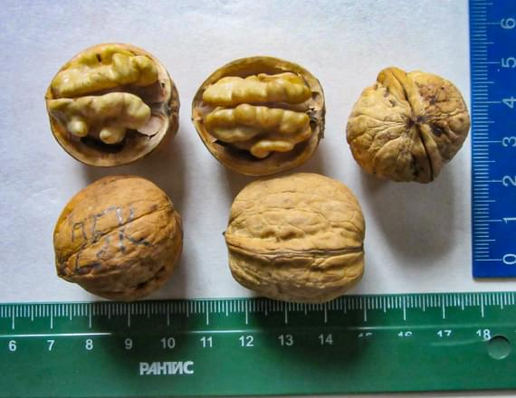

ГС 3-Д - гибридный сеянец воронежского происхождения. F2 (ор.грецкий Х ор.маньчжурский) – раннеспелый гибрид с плодами грецкого типа. Созревание плодов в обычный год до 15 сентября. Зима 2016 года – 0 баллов. Выход ядра 37-38% (2016 г.). Вкус хороший. Ядро извлекается половинками, целиком. Скорлупа прочная – 2,1 мм.
Гибриды ореха грецкого
Исторический опыт, характеристики и описание
Продолжая историю селекционных работ
показываем конкретные результаты
Для повышения морозо- и зимостойкости ореха грецкого в середине XX столетия рядом ученых проводились прямые (где орех грецкий - материнское растение) и обратные (где орех грецкий - отцовское растение, опылитель) скрещивания его с дикими видами рода Juglans - орехи маньчжурский, сердцевидный, черный, серый, Зибольда. Полученные гибриды отличались большей устойчивостью к болезням и приспособленностью к зимним условиям новых мест культивирования.
Одни из них были получены в 1960 году воронежскими учеными М.М.Вересиным и М.К.Улюкиной от скрещивания лучших зимостойких форм и сортов ореха грецкого Ф.Л.Щепотьева из г.Купянска Харьковской области с орехами маньчжурским и сердцевидным с Дальнего Востока. В первом поколении гибриды F1 делились на три типа - матроклинный (похожи на мать - грецкий орех), патроклинный (похожи на отца - орех маньчжурский) и промежуточный тип (непохожие ни на одного из родителей.
Продолжив работу воронежских ученых, мы получили качественно новые гибриды, включив в селекционный процесс зимостойкие скороплодные грецкие орехи из восточной Украины, Киева, Волгограда, Краснодара, Кореновска, Минска, которые опыляли гибриды F1. Результаты селекции представлены в таблице ниже.
Характеристика гибридов ореха грецкого
ГС 4-Д - гибридный сеянец воронежского происхождения. F2 (ор.грецкий Х ор.маньчжурский) – гибрид грецкого типа. Зима 2016 г. – 0 баллов. Созревание плодов – вторая половина сентября. Выход ядра – 48-49%, толщина скорлупы – 1,6 мм. Скорлупа прочная, но растрескивается в руках при нажатии. Ядро извлекается целиком. Вкус – 4,5 балла.
ГС 8-Д - гибридный сеянец воронежского происхождения. F2 (ор.грецкий Х ор.маньчжурский) – гибрид грецкого типа. Зима 2016 г. – часть дерева без подмерзания – 0 баллов, но есть усохшая ветвь. В предыдущие годы без подмерзаний до -31°С. Созревание плодов – третья декада сентября. Выход ядра – 35-43,5%. Скорлупа прочная, раскалывается молотком. Ядро извлекается четвертинками. Вкус – хороший, маслянистый.
ГС 9-Д - гибридный сеянец воронежского происхождения. F2 (ор.грецкий Х ор.маньчжурский) – гибрид грецкого типа с латеральным типом плодоношения. Созревание плодов – средина сентября. Зима – 0 баллов. Выход ядра – 48-49,5%. Скорлупа – 1,7 мм. Ядро извлекается целиком или половинками. Вкус – приятный.
ГС 10-Д – гибридный сеянец воронежского происхождения. F2 (ор.грецкий Х ор.маньчжурский) – гибрид грецкого типа. Зима – 0 баллов. Созревание плодов – третья декада сентября. Выход ядра – 48,8%. Скорлупа -1,5-1,8 мм. Ядро извлекается целиком. Вкус приятный со слабым оттенком ореха маньчжурского, без горечи.
ГС 11-Д - гибридный сеянец воронежского происхождения F2 (ор.грецкий Х ор.маньчжурский) – гибрид грецкого типа. Зима – 1 балл. Созревание плодов – вторая половина сентября. Выход ядра – 39,8-48,3%. Толщина скорлупы – 1,2-2,0 мм. Скорлупа прочная. Ядро светло-коричневого цвета, вкус приятный, сладковатый, без горечи. Ядро извлекается четвертинками и половинками.
ГСП 12-Д – гибридный сеянец воронежского происхождения. F2 (ор.грецкий Х ор.маньчжурский) – гибрид промежуточного типа. Гроздевидный, высокоурожайный, слаборослый. Зима – 0 баллов. Созревание плодов – середина сентября и до конца месяца. У его сеянцев предполагается повышенная морозостойкость и лучший выход ядра, чем у маточного ореха. Выход ядра маточного дерева – 24-28 (30)%. Ядро светлое, очень маслянистое, вкусное. Извлечение ядра разное.

ГС 86-1 – гибридный сеянец воронежского происхождения. F2 1-9-4 (ор.грецкий Х ор.сердцевидный) – гибрид грецкого типа. Зимостойкость за 5 суровых зим – 0,9 балла. Выход ядра по годам: 38-48%. Ядро извлекается целиком, половинками. Вкус – 4,4 балла. Тип плодоношения – верхушечно-приверхушечный. В холодный 2017 год самый урожайный по Тульской области (3,5 балла). В третьем поколении может дать скороплодное потомство. Созревание плодов – вторая половина сентября. Стабильное плодоношение по всем годам. В феврале 2019 г. маточное растение уничтожено. Имеется плодоносящее потомство в селекционном саду.

ГС 85-1 – гибридный сеянец воронежского происхождения. F2 (ор.грецкий Х ор.сердцевидный) – гибрид грецкого типа. Зимостойкость за 5 суровых зим – 0,9 балла. Выход ядра – 42-45%. Ядро извлекается половинками, целиком. Вкус – приятный, сладковатый – 4,7 балла. Скорлупа прочная – 1,6-1,8 мм. Созревание плодов – третья декада сентября. В феврале 2019 г. маточное растение уничтожено. Имеется плодоносящее потомство в селекционном саду.

ГС 86-3 – гибридный сеянец воронежского происхождения. F2 (ор.грецкий Х ор.маньчжурский) – гибрид грецкого типа. Зимостойкость за 5 суровых зим – 1,3 балла. Тип плодоношения – верхушечный, слабо приверхушечный. Орехи выше среднего размера. Скорлупа прочная – 1,7-2,0 мм. Выход ядра по годам: 38-45%. Вкус – приятный. Извлечение ядра – четвертинками. Созревание плодов – вторая половина сентября. В третьем поколении может дать скороплодное потомство. В феврале 2019 г. маточное растение уничтожено. Имеется плодоносящее потомство в селекционном саду.

ГС 85-3 - гибридный сеянец воронежского происхождения, F2 (ор.грецкий Х ор.сердцевидный). Плоды грецкого типа. Возраст 18 лет, высота 4,5 м. Тип плодоношения верхушечно-приверхушечный. Урожайность 2012 г. — 260 плодов с дерева. Орехи массой 8—12 г собраны в кисти по 3—4 шт. Выход ядра 43—46 %. Толщина скорлупы 1,6 мм. Ядро извлекается целиком, вкус гармоничный, очень приятный – 4,5 балла. Зимостойкость 0,4 балла. Марсонией поражается очень слабо. Даёт скороплодное потомство с орехами более высокого качества. Имеется плодоносящее потомство лучшего качества в селекционном саду. Маточное дерево было уничтожено в 2019 г.

ГС 86-5 - гибридный сеянец воронежского происхождения, F2 (ор.грецкий Х ор.сердцевидный). Плоды грецкого типа. Возраст 18 лет, высота 5 м. Тип плодоношения — верхушечно-приверхушечный. Урожай 2012 г. составил 160 плодов с дерева. Орехи среднего размера, массой 6—9 г, собраны в кисти по 3—4 шт. Толщина скорлупы 1,2 мм. Выход ядра 48—49 %. Вкус – сладковатый, без горечи – 4,3 балла. Ядро извлекается легко, вкус хороший. Зимостойкость 1,1 балла. Марсонией поражает¬ся очень слабо. При посеве семян данного гибрида получается скороплодное потомство с орехами высокого качества (есть плодоносящие гибриды F3). Имеется плодоносящее потомство лучшего качества в селекционном саду. Маточное дерево было уничтожено в 2019 г.
ГСП 86. F2 14-2 (ор.грецкий Х ор.маньчжурский) – гибрид промежуточного типа. Морозостойкость на уровне -38,5°С, возможно и ниже (в Туле ниже не было). Растет в богарных условиях (без агротехники, полива). Выход ядра зависит от обеспеченности влагой во время вегетации. При недостатке – слабая выполненность ядра. Орехи мелкие, собраны в гроздья по 3-8 шт. Поверхность скорлупы как у грецкого ореха. Выход ядра у орехов маточного дерева – 30%. Ядро извлекается крупными кусочками. Вкус – сладковатый, без горечи. У его сеянцев выход ядра предполагается выше. Может повреждаться заморозками. В 2017 г. без урожая (заморозок 100%). Возможно, проявление скороплодности у части сеянцев. Зимостойкость – 0 баллов. Марсонией поражается слабо.
ГСП 85. F2 14-2 (ор.грецкий Х ор.маньчжурский) – гибрид промежуточного типа воронежской селекции (Улюкина М.К., Вересин М.М.). Гибрид получен в Туле, путем посева семян от свободного опыления F1 14-2. Растет в богарных условиях без агротехники и полива. Растет в затенении с юга. Высота – 9м. Скорлупа почти гладкая, как у грецкого ореха. Выход ядра – 50-61%. Ядро извлекается целиком. Ядро светло желтое. Вкус – приятный маньчжурский орех. Орехи мелкие. Тип плодоношения – верхушечно-приверхушечный. В верхушечных соплодиях до 5-7 шт. орехов. Марсонией поражается слабо.
ГСП 35. – гибрид промежуточного типа F2 14-2 (ор.грецкий Х ор.маньчжурский) воронежской селекции. Гибрид получен в Туле посевом семян от свободного опыления. Морозостойкость на уровне -38,5°С, но повреждается поздними весенними заморозками. Орехи мелкие. Масса – 5-8 г. Выход ядра 39-42%. Орехи собраны по 2-3 шт. Ядро извлекается половинками и крупными кусочками. Вкус – приятный. Возраст - 16 лет. Высота – 4,5 м. Марсонией поражается слабо.
ГС 24-К – скороплодный гибридный сеянец F3 (ор.грецкий Х ор.сердцевидный), первоначально воронежской селекции Улюкиной М.К. Исходная форма F1 1-9 (ор. грецкий Х ор. сердцевидный), произрастающая на селекционном участке в Семилукском лесопитомнике Воронежской области. Гибрид получен нами путем посева семян F2 от свободного опыления ГС 86-5 (F2 1-9) в Тульской области в 2008 г. Цветение на 2-й год. Первые плоды на 3-й год. Процент бокового плодоношения -70-100%. Выход ядра – 57-61%. Орехи выше среднего размера. Скорлупа тонкая. Ядро извлекается целиком. Вкус хороший. Зимостойкость – 0,85 балла.

ГС 25-К - скороплодный гибридный сеянец F3 (ор.грецкий Х ор.сердцевидный), первоначально воронежской селекции Улюкиной М.К. Исходная форма F1 1-9 (ор.грецкий Х ор.сердцевидный), произрастающая на селекционном участке в Семилукском лесопитомнике Воронежской области. Гибрид получен нами путем посева семян F2 от свободного опыления ГС 86-5 (F2 1-9) в Тульской области в 2008 г. Цветение на 2-й год. Первые плоды на 3-й год. Процент бокового плодоношения до 100%. Плоды округлой формы (похожи на «дедушку»). Выход ядра – 58-62%. Высокая урожайность. Созревает до средины сентября. Вкус – 4,5 балла.
ГС 26-К - скороплодный гибридный сеянец F2 (ор.грецкий Х ор.маньчжурский) грецкого типа воронежского происхождения (селекция Улюкиной М.К. и Вересина М.М.). Гибрид получен нами путем посева семян F1 от свободного опыления в Тульской области в 2008 г. Цветение на 2-й год. Первые плоды на 3-й год. Процент бокового плодоношения -80-100%. Орехи среднего размера и выше. При перегрузе урожая и недостатке влаги мельчают. Зимостойкость – 0,71 балла.
ГСП 29-К – скороплодный гибридный сеянец промежуточного типа от свободного опыления гибрида F2 7-24-99. Год появления – 2009 г. Первое цветение на второй год. Начало плодоношения – 3-й год. Пересажен в сад в 2014 г. Боковое цветение – 90-100%. Орехи собраны в гроздья по 3-4 шт. Созревание плодов во второй половине сентября. Внешне плод похож на грецкий орех. Выход ядра до 30-32%. Орех раскалывается молотком, но ядро извлекается значительно легче, чем у маньчжурского ореха. Вкус приятный. При искусственном опылении завязи сбрасывает. В 2016 г. единичные плоды. В 2017 г. единичные плоды после заморозков. Поздновегетирующий. Зимние повреждения – 0,33 балла. Выдерживал без подмерзания -36°С, но имел легкие подмерзания в более теплые зимы. Требователен к поливу. От этого зависит наполненность ядром.
ГСП 28-К – скороплодный гибридный сеянец промежуточного типа от свободного опыления гибрида F2 15-3-99. Год появления – 2010 г. Первое цветение на второй год. При искусственном опылении завязи сбрасывал. Первые плоды получены на 5-й год. В верхушечных соцветиях до 10-12 женских цветков, на боковых до 5-6 шт. Рыльца вначале розовые (признак маньчжурского ореха), затем желтеют. На некоторых соцветиях рыльца желтые (признак грецкого ореха). Выход ядра зависит от лета. При недостатке влаги ядра меньше. При засушливой весне необходим полив, чтобы сохранить завязи. Сеянцы от одного маточного растения F2 15-3-99. Высокозимостойкие (без повреждений все зимы, минимум -34,5°С). При засушливой весне требуется полив для предотвращения осыпания завязей

ГС 3-11С – F1 85-3 (третье поколение гибрида (ор. Грецкий Х ор. Сердцевидный)). Скороплодный гибрид латерального типа плодоношения. 100% боковое плодоношение. В гроздях по 3-4-5-7-9-11 шт. выход ядра – 47,7-50%. Ядро извлекается целиком, половинками. Вкус – 4,4 балла. Созревание – вторая половина сентября.

ГС 5-20С - F3 грецкий тип из моих гибридов. Родословная утеряна. Воронежская линия + скороплодное опыление. Верхушечно-боковое плодоношение 80-100%. Орехи по 2-1-3 шт. Выход ядра – 47,5-51%. Извлекается целиком. Зимостойкость высокая. Созревание – вторая половина сентября.

ГС 3-27С – F2 (ор. Сердцевидный Х ор. Грецкий). Верхушечный тип по 7-8-10-12 шт. Поздняя вегетация, позднее цветение (начало июня). Гроздевидное плодоношение. Выход ядра – 15,8-17,1 (до 30%). Вкус – 4,5 балла. Потенциально выход ядра должен быть больше (засушливое лето с июля). Созревание – конец сентября – начало октября. Возможно, опылен черным орехом. Ядро маслянистое, приятное на вкус.
ГСП 28-К и ГСП 31-К – Скороплодные гибриды (ор. Маньчжурский Х ор. Грецкий) промежуточного типа со 100%-й латеральностью. Быстрорастущие. Сеянцы от одного маточного растения F2 15-3-99. Высокозимостойкие (без повреждений все зимы, минимум -34,5°С). При засушливой весне требуется полив для предотвращения осыпания завязей. Отличаются сроками созревания.
ГСП 31-К созревает – средина сентября,
ГСП 28-К – конец сентября.
Сеянцы могут дать интересное скороплодное потомство, потому что вокруг скороплодные орехи, как грецкие, так и гибриды. Выход ядра не большой – до 30%. Ядро сладкое.
Продолжается работа по выведению новых гибридных форм ореха грецкого с лучшими техническими характеристиками и свойствами (скороплодность, латеральный тип плодоношения, большое содержание ядра и легкое его извлечение, хороший вкус) при высокой морозо- и зимостойкости.
Большинство сеянцев всех гибридных форм в третьем поколении дают орехи лучшего качества, чем на материнских растениях.